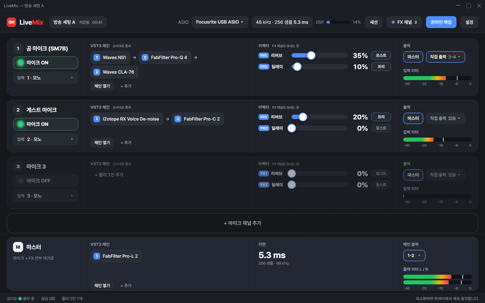

LiveMix 라이브믹스
마이크에 VST3를 걸어 방송으로 보내는 프로그램
- 요구 사항
- Windows 10 / 11 (64비트) · ASIO 인터페이스 필요
- 기타
- 바뀐 점 · GitHub 릴리스
주요기능
- ASIO 지원 (ASIO가 없으면 사용이 불가능합니다.)
- 인풋 채널 스테레오 기준 최대 4개 지원 (모노 8개)
- FX 채널 최대 4개의 사용 가능 (프리페이더,포스트페이더 지원)
- 라이브 방송에 최적화되어 어떤 DAW보다 가볍고 안정적인 시스템
- 직관적인 마이크 ON/OFF 버튼과 샌드 조절 버튼
- VST3 (옵션으로 VST2) 플러그인 체인, 플러그인 프리셋, 검색이 되는 플러그인 관리
- 채널별 플러그인 그룹: 체인의 플러그인을 골라 묶어 두고 번호 하나로 한꺼번에 끄고 켜기 (최대 5개)
- 마스터 출력 LUFS 미터 (ITU-R BS.1770-4 / EBU R128: 순간·단기·통합·범위·트루 피크, 목표 대비 표시)
비용 : 완전 무료

설치할 때 Windows가 ‘알 수 없는 게시자’ 경고를 띄웁니다. 추가 정보 → 실행을 누르면 됩니다. 아직 코드 서명을 하지 않아서 그렇습니다.
Stream Deck 연동
LiveMix 0.6.0부터 Elgato Stream Deck(하드웨어, Stream Deck +, 휴대폰의 Stream Deck Mobile)에서 마이크 ON/OFF, 전체 마이크, 마이크·FX 뮤트그룹, 플러그인 그룹을 키로 조작하고 Stream Deck +의 다이얼로 FX 보내는 양을 조절할 수 있습니다.
Stream Deck 플러그인 0.9.1 다운로드 테스트판 · Stream Deck 앱 7.1 이상 · Windows 전용 · 파일을 열면 Stream Deck 앱이 설치를 안내합니다- LiveMix 0.6.0 이상 설치 → 설정 → 외부 제어 (Stream Deck) → ‘외부 제어 사용’ 켜기 (주소와 ‘연결 대기 중’이 표시됩니다)
- 위 플러그인 파일을 열어 설치 → Stream Deck 앱의 LiveMix 항목에서 키를 끌어다 놓고, 키 설정에서 마이크·FX를 고릅니다
- 휴대폰: Stream Deck Mobile(무료 6키)을 같은 와이파이의 PC Stream Deck 앱에 연결하면 같은 키를 쓸 수 있습니다
- 제어는 이 PC 안에서만 통합니다(127.0.0.1). 외부 제어를 끄면 아무것도 달라지지 않습니다
문제가 생기면
- 키에 ‘LiveMix 미연결’: LiveMix가 꺼져 있거나 아직 연결 중입니다. LiveMix를 실행하면 자동으로 이어집니다
- 키에 ‘제어 꺼짐’: LiveMix 설정에서 ‘외부 제어 사용’이 꺼져 있습니다
- 키에 ‘채널 없음’: 세션이 바뀌어 고른 마이크가 없어졌습니다. 키 설정에서 다시 고르세요 (같은 이름이 하나뿐이면 자동으로 이어집니다)
- 기록:
%APPDATA%\LiveMix\logs\control.log(토큰·세션 내용은 기록되지 않습니다). 문의는 위 카카오톡 오픈채팅으로